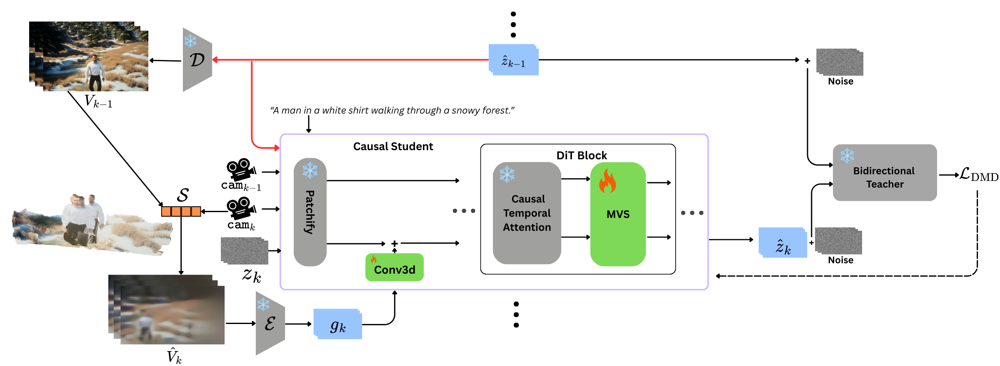

TL;DR We present the first framework for long multi-view video generation by composing
temporal and view-wise autoregression with a 4D geometric prior.
Recent advances in video diffusion models have enabled either long single-view generation through temporal autoregression, or short multi-view synthesis through bidirectional attention. However, generating long, multi-view consistent videos of dynamic scenes remains unsolved. In this work, we present MV-Forcing, a framework that composes temporal and view-wise autoregression within a single diffusion model by introducing a 4D geometric bridge between sequentially generated views. Our key insight is that an autoregressive 3D reconstruction model naturally interfaces between autoregressively generated views. Given a completed source view, we reconstruct its 3D structure and render a geometric prior of the next target viewpoint, which the diffusion model refines into a photorealistic video. To extend generation beyond the teacher's fixed temporal window, we introduce a joint denoising regime where both view slots are initialized from noise during training, enabling temporally unbounded generation. We distill the model via Distribution Matching Distillation with Spatio-Temporal Self-Forcing, closing the train-inference exposure bias gap for both temporal and view-sequential autoregression. Extensive experiments demonstrate that MV-Forcing produces geometrically consistent multi-view videos of dynamic scenes at arbitrary lengths and viewpoint counts using a single few-step student model.
Each video shows 3 synchronized views generated autoregressively from a single text prompt. Our framework generates temporally coherent video across multiple viewpoints and extended temporal horizons, and generalizes to real-world data with minimal finetuning.

🎥 We compose temporal and view-sequential autoregression within a single diffusion model,
generating video blocks sequentially along both time and viewpoints using a causal few-step student
distilled from a bidirectional teacher.
🌍 Each generated block is fed into CUT3R, a recurrent 3D reconstruction model that accumulates
a persistent geometric state encoding the 4D structure of the scene from all previously generated
content across both axes.
🔍 When generating the next view, the accumulated state is queried from the target camera
to produce a geometric prior that grounds the generation in the full scene geometry observed so far.
📋 See our paper for details on how Spatio-Temporal Self-Forcing closes the train-inference
exposure bias gap along both axes, enabling generation at arbitrary length and viewpoint count.